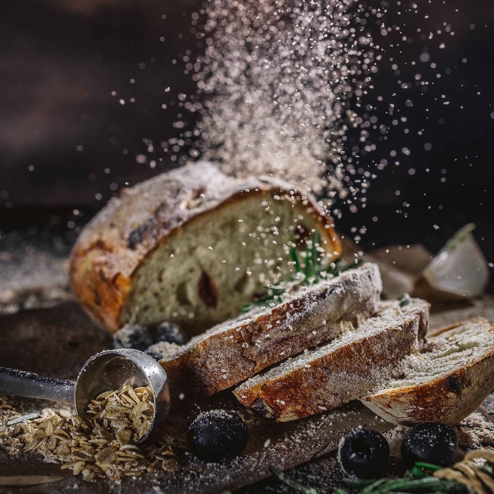
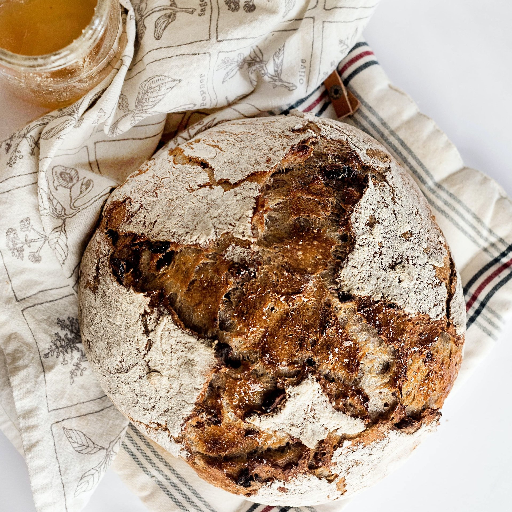
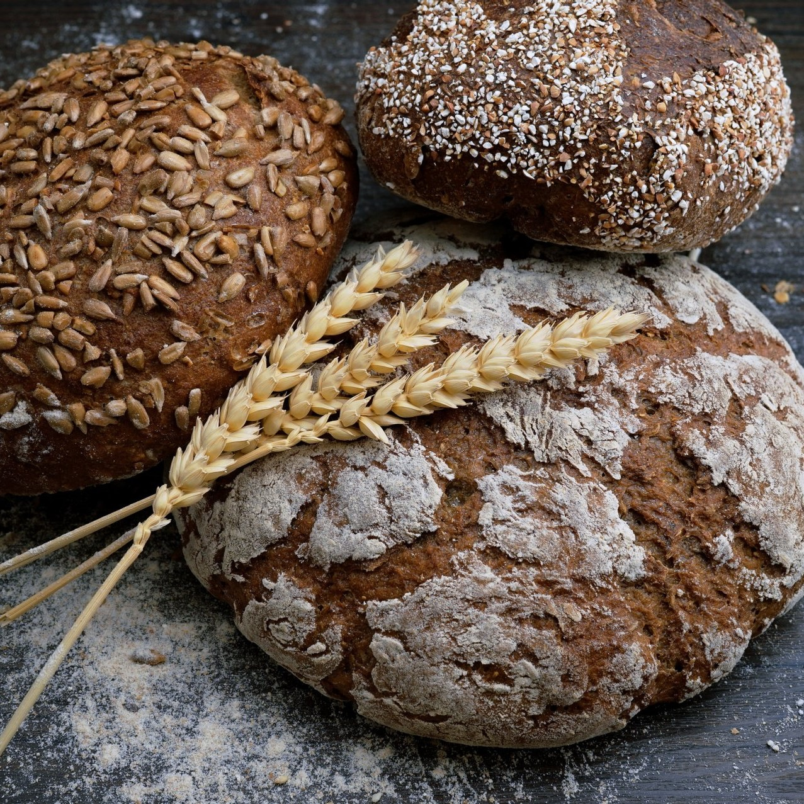
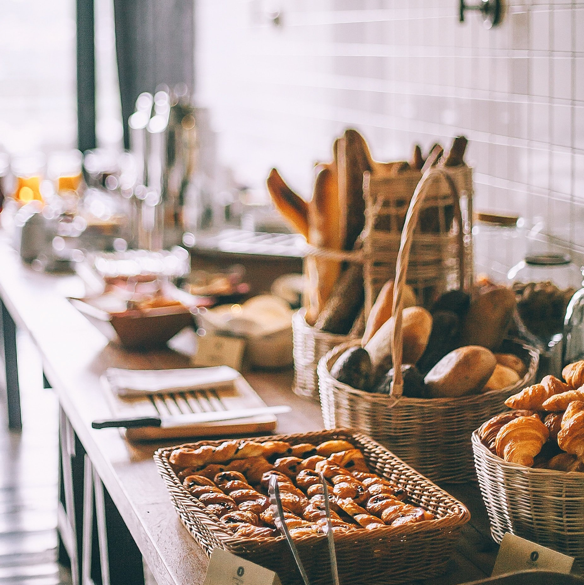
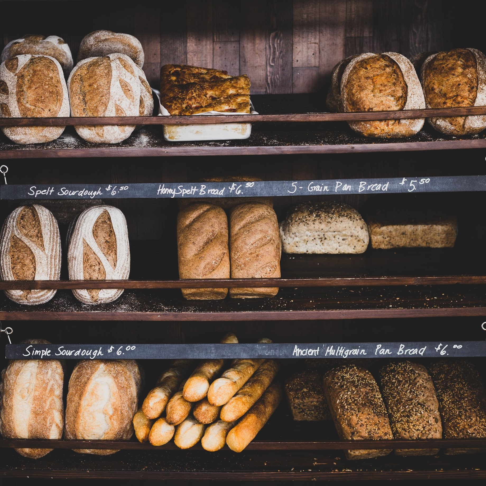
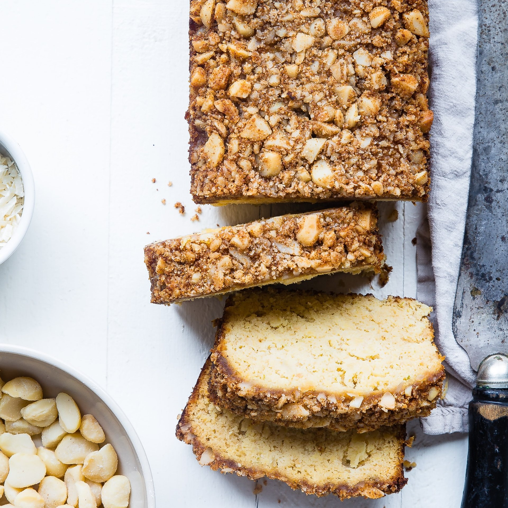

Our Panetteira bakery
At Panetteira Bakery, we apply time-tested balanced methods that offer unique flavors and textures. Our range of hand-crafted bread includes varieties from all over the world and is designed according to high-quality industry standards. We use our natural sourdough in each type of our bread. We never take shortcuts for our processes since that is how we achieve that irresistible freshness and taste.Gallery





